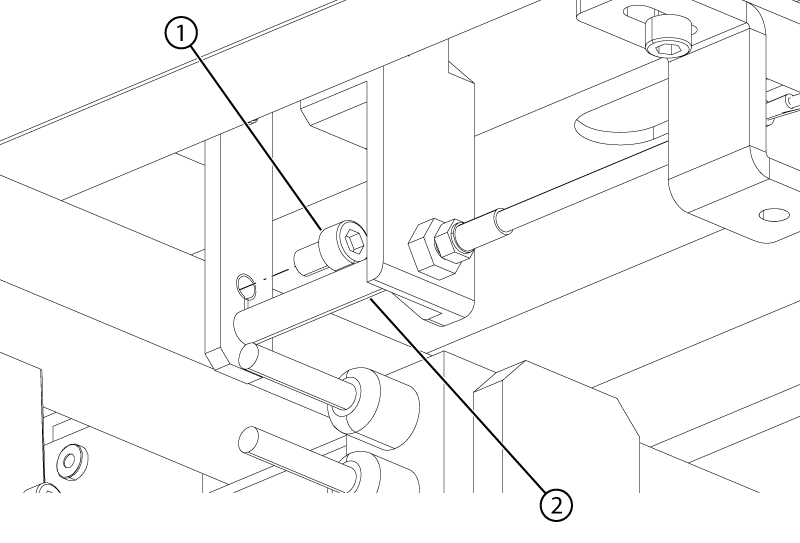
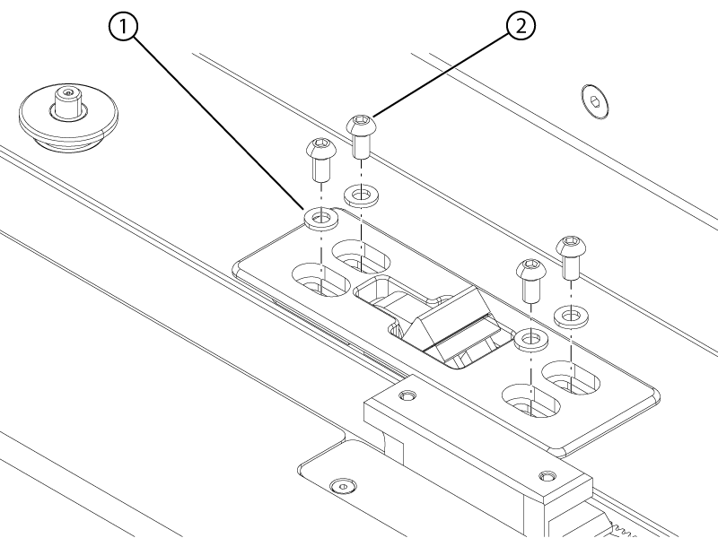
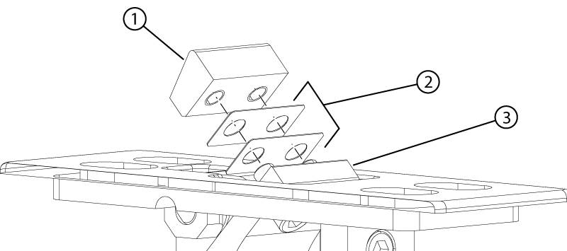

Adjusts the flipper assembly height and table position.
Prerequisites
Personnel requirements
Required persons
Preliminary requirements
Procedure
Finalization
1
-
10 minutes
-
Tools and test equipment
Item
Quantity
Part number
Manufacturer
Stainless Steel Ruler
1
46-198452P2
-
Nonmagnetic Titanium Service Tool Kit, Small Set
1
5113258
-
Procedure
Dock the table.
Push the cradle into the bore until the flipper assembly is exposed.
Measure the distance from the top surface of the stop block to the top surface of the flipper housing.
Figure 1. Stop block measurement
1
Stop block
2
Stop block height above housing
3
Flipper housing
If the measurement is not within specification, do the following to adjust the flipper height:
Flipper housing revision
Height specification
Rev 3 (white painted)
12 ± 0.5 mm
Rev 4 (unpainted aluminum)
13 ± 0.5 mm
Remove the screw holding the cable to the flipper housing.
Figure 2. Flipper housing cable

1
Flipper housing cable screw
2
Flipper housing cable spacer
Slide the ball end of the cable up to the screw hole and pull the end of the cable out of the flipper assembly. Retain the spacer.
Remove the four screws and four washers securing the flipper assembly to the tabletop.
Figure 3. Flipper tabletop hardware

1
Washer
2
Screw
Adjust the quantity of 0.25 mm shims until the distance is within specifications.
Figure 4. Stop block shims

1
Stop block
2
Shim
3
Flipper housing
Install the flipper to the tabletop.
Thread the ball end of the cable through the flipper, spacer, and the flipper housing.
Install the screw holding the cable to the flipper housing.
Install the four screws securing the flipper assembly to the tabletop.
Adjust the flipper housing such that the distance from the front surface of the cradle stopper to the front surface of the flipper housing is 293 (+1/-0) mm.